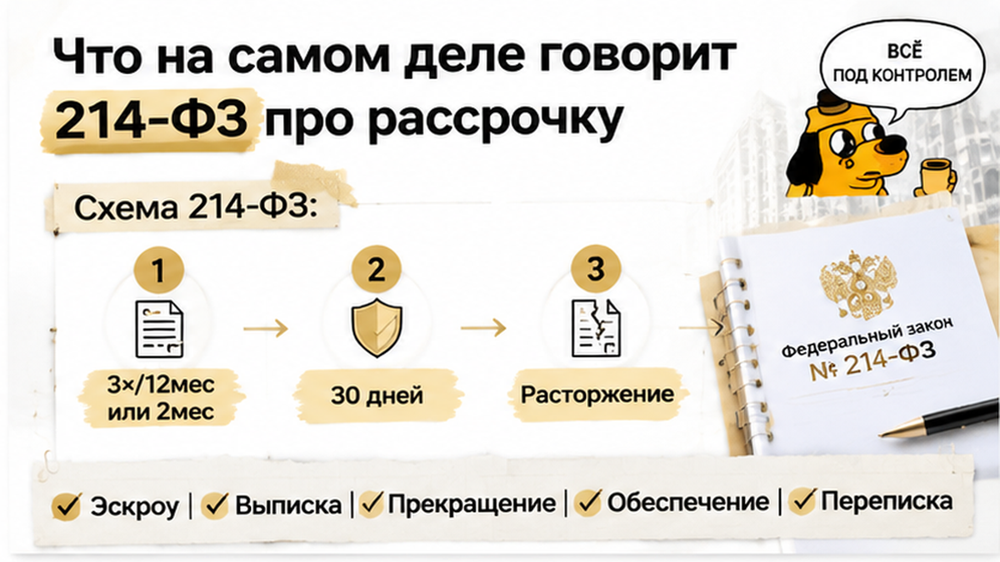

5 дней задержки платежа — и вместо подготовки к получению ключей семья из Тюмени разбирает уведомление о расторжении ДДУ. На кухонном столе лежат договор, график рассрочки и банковская выписка: очередной платёж внесён на 5 календарных дней позже срока. До передачи корпуса остаётся около трёх недель, а застройщик заявил о неустойке и удержал из внесённых денег 180 тысяч рублей. Покупатели считают удержание незаконным. Но просрочка сама по себе не означает, что застройщик вправе забрать квартиру и прекратить ДДУ.
Я Святослав Шакин, The Риэлтор, Тюмень. В Telegram и MAX разбираю договоры и условия покупки новостроек простым языком: где перед покупателем обязательство, а где обещание менеджера, которое в договор так и не попало.
У семьи зарегистрирован договор участия в долевом строительстве — ДДУ. Квартиру покупают в строящемся доме, цена разбита на несколько платежей по рассрочке от застройщика. Первый взнос внесён, очередной платёж поступил на пять календарных дней позже даты из графика.
Причину задержки нельзя определять по одной фразе из уведомления. Нужны платёжное поручение, банковская выписка и график: когда деньги отправили, когда зачислили и какая дата считается исполнением обязанности по договору. Эти события могут не совпадать.
Позиция застройщика жёсткая: срок нарушен, начислена неустойка, направлено уведомление об одностороннем расторжении. Для покупателя это заявление о прекращении договора без его согласия.
Но само уведомление ещё не доказывает законность отказа. Нужно проверить, было ли предусмотренное законом основание и соблюдён ли порядок перед расторжением. Одной ссылки на просрочку недостаточно.
Важно проверить весь график, а не только последнюю строку. Известна задержка одного платежа; сведений о предыдущих нарушениях нет. Нельзя дописывать семье многомесячный долг, но историю оплат нужно подтвердить датами, выписками, письмами и почтовыми документами.
Рассрочка часто кажется проще ипотеки: есть цена квартиры, первый взнос и несколько дат для остатка. Но в договоре важно понять, когда обязанность по оплате считается выполненной, какие последствия предусмотрены за задержку и как застройщик предъявляет расчёт.
Отдельно проверяется маршрут денег. Первый взнос, очередной платёж, сумма на эскроу и обеспечительный платёж — не обязательно одно и то же. Название, данное менеджером, не объясняет, почему 180 тысяч рублей можно оставить у себя.
180 тысяч рублей нельзя признать законной неустойкой только потому, что застройщик назвал эту сумму неустойкой. Нужен расчёт: какой платёж просрочен, какова его сумма, какую ставку применили и за сколько дней начислили пеню.
Цена всей квартиры, первый взнос и просроченная часть платежа — разные величины. Если неустойку посчитали от полной стоимости ДДУ или от непросроченной суммы, расчёт требует проверки. Пятидневная задержка сама по себе не объясняет происхождение 180 тысяч.
В договоре стоит найти формулировку о перечисленных деньгах: это оплата цены квартиры, обеспечительный платёж или иной взнос. Название не даёт автоматического права удержать сумму, но помогает понять, какие документы запросить.
Тот же вопрос возникает, когда меняется маршрут денег. Например, когда эскроу не открыли на финише сделки, важно установить, куда должен был попасть платёж и кто вправе им распоряжаться. Без банковской выписки и условий ДДУ нельзя уверенно сказать, что именно застройщик называет удержанием.
Для разговора «пять дней против 180 тысяч» нужны график рассрочки, подтверждения оплат, уведомление, расчёт неустойки и условия о последствиях просрочки. Разбор начинается с вопроса, какая цифра подтверждена договором и арифметикой.
После уведомления о расторжении квартира снова появилась в продаже. До плановой передачи корпуса оставалось около трёх недель, но семья уже думала не о ключах, а о договоре и внесённых деньгах. Покупатели направили застройщику претензию: с удержанием 180 тысяч рублей они не согласны и считают его незаконным.
Просрочка была: очередной платёж поступил на пять календарных дней позже. Но этого недостаточно, чтобы понять, имел ли застройщик право отказаться от ДДУ, как рассчитали неустойку и почему удержали именно 180 тысяч рублей.
Ключи семье не передали, полного возврата денег нет, решения суда отсутствует. Пока это досудебный спор. Повторное объявление о продаже не доказывает законность прекращения договора, а претензия покупателей ещё не означает автоматический возврат денег.
Важны не звонки в отдел продаж, а письменные требования и документы: даты уведомлений, подтверждения отправки, платёжные документы и расчёт удержания. Тогда спор строится вокруг фактов, а не фразы «у нас так принято».
Просрочка на пять дней — законный повод расторгнуть ДДУ и оставить взнос у застройщика, или покупателю стоит требовать возврата через суд?

Проверку стоит начать с двух дат: когда должен был прийти платёж и когда деньги фактически зачислили. Затем нужно посмотреть историю рассрочки за последние двенадцать месяцев. Для одностороннего отказа застройщика важны основания, прямо указанные в части 5 статьи 5 закона № 214-ФЗ.
Их два: покупатель нарушил сроки платежей более трёх раз за двенадцать месяцев либо просрочил очередной платёж более чем на два месяца. Одна задержка на пять календарных дней сама по себе под эти основания не подходит. Поэтому нужно сверить весь график и даты зачисления.
Даже при наличии основания застройщик должен соблюдать порядок. Сначала покупателя письменно предупреждают о необходимости погасить задолженность и последствиях. Отказаться от ДДУ можно не раньше чем через тридцать дней после предупреждения. Предупреждение и уведомление об одностороннем расторжении — разные документы.
Имеет значение и способ отправки. Уведомление направляется заказным письмом с описью вложения, а день расторжения закон связывает с днём отправки. Понадобятся копии писем, квитанции, опись и сведения о вручении или другом способе доставки.
Неустойку считают отдельно: по части 6 статьи 5 — как 1/300 ключевой ставки Банка России от суммы просроченного платежа за каждый день задержки. Не от полной цены квартиры и не автоматически от первого взноса.
Чтобы проверить удержание в 180 тысяч рублей, нужны размер просроченного платежа, ставка и количество дней. Без расчёта считать эту сумму законной нельзя.
Если застройщик законно отказался от договора, деньги, внесённые в счёт цены ДДУ, он обязан вернуть в течение десяти рабочих дней. Пеню покупателя нельзя просто вычесть из суммы возврата: её можно требовать отдельно.
Для средств на эскроу действует специальный порядок: возврат связан с регистрацией прекращения ДДУ и поступлением предусмотренных законом сведений. Нужно выяснить, где находится каждая часть денег и зарегистрировано ли прекращение договора.
Если спор дойдёт до суда, явно несоразмерную неустойку можно просить уменьшить по статье 333 ГК РФ. Но сначала придётся разделить три вопроса: была ли просрочка, позволяла ли она прекратить договор и что происходит с внесёнными деньгами.
Прежде чем спорить об удержании, сопоставьте ДДУ с банковской выпиской: куда ушёл первый взнос, кто держит деньги и по какому порядку их можно вернуть.
Если сумма находится на эскроу, до раскрытия счёта застройщик ею не распоряжается. Важно разделить три вещи: что списано, что осталось на счёте и какую сумму компания отказывается возвращать. Одного письма застройщика недостаточно для обещания перевода: нужно понять, прекращён ли ДДУ в установленном порядке и какие документы получил банк.
В другом тюменском споре о переносе ключей и замороженных деньгах на эскроу именно маршрут платежа определял возможности покупателя. Здесь действует тот же принцип: слово «эскроу» не означает, что деньги можно забрать по одному требованию.
Если часть платежей ушла не на эскроу, установите назначение каждого перевода и его связь с ценой квартиры. «Обеспечительный платёж» не превращает сумму в законный штраф: понадобятся ДДУ, платёжные поручения, выписка и расчёт застройщика. В разборе о смене юрлица застройщика и неоткрытом эскроу важна та же разница между сохранностью суммы и возможностью её забрать.
Переписку об отсрочке тоже стоит сохранить. Сообщение менеджера «можете внести позже» объясняет ожидания семьи, но не заменяет письменного соглашения. Новый график безопаснее оформить документом.
В рассрочке легко смешать задержку платежа, досрочное закрытие графика и просрочку передачи квартиры. Деньги и сроки фигурируют во всех трёх случаях, но правила различаются.
| Что произошло | Что проверить | Какой вопрос решается |
|---|---|---|
| Покупатель задержал очередной платёж | График, дату зачисления, прежние задержки, предупреждение и расчёт пени | Есть ли основания для санкции и отказа от ДДУ, как должен проходить возврат |
| Покупатель закрывает рассрочку раньше | Условия о цене, скидке и досрочной оплате | Меняется ли итоговая стоимость; скидка не считается обещанной автоматически |
| Застройщик задерживает передачу квартиры | Срок передачи в ДДУ и документы о передаче | Есть ли отдельная неустойка в пользу покупателя по статье 6 |
Чтобы проверить удержание 180 тысяч рублей, нужны договор, подробный расчёт, платёжные поручения, банковская выписка, предупреждение и подтверждение отправки уведомления. В расчёте должны быть видны просроченный платёж, ставка и число дней.
Если пеня несоразмерна последствиям нарушения, в суде можно заявлять о применении статьи 333 ГК РФ. Но это не обнуляет сумму автоматически. Сначала нужно установить, что именно предъявлено и законно ли расторжение: размер неустойки этого вопроса не заменяет.
Сверьте четыре даты: срок из графика, отправку денег, их зачисление и получение уведомления. В споре важна последовательность событий, а не общая фраза «оплатили с задержкой».
Если сравниваете рассрочки в тюменских новостройках, сохраняйте разборы в Telegram или MAX. Смотрим не только на размер платежа, но и на то, что произойдёт при задержке.
До подписания ДДУ проверьте график, пункт об одностороннем отказе и маршрут каждого платежа. Отсрочку лучше оформить письменно: разговор с менеджером не должен оставаться единственным подтверждением нового срока. Платёжную часть нужно разбирать заранее — так же, как в ситуации, когда условия финансирования меняются накануне ДДУ: новые обязательства нельзя принимать по старым расчётам.
Семья уже направила претензию. Теперь важно фиксировать даты писем, сохранять выписки и запросить у застройщика расчёт и правовое обоснование удержания. Так спор переводится от решения отдела продаж к конкретным документам.